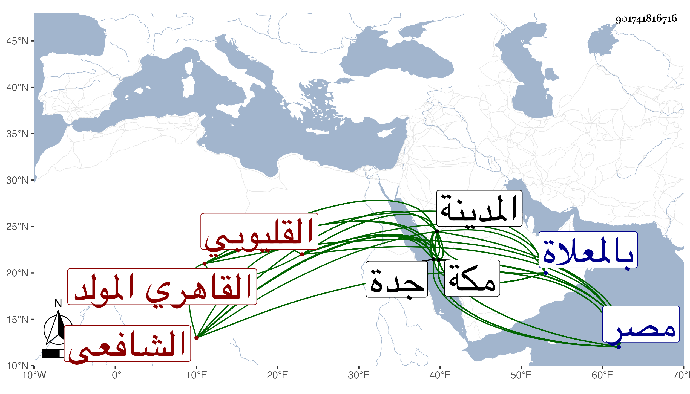

0902Sakhawi.DawLamic.ITO20230111-ara1.EIS1600.901741816716
Biography ID: 901741816716
383
أحمد بن محمد بن عبد الله بن داود الشهاب القليوبي الأصل القاهري المولد المكي المنشأ الشافعي سبط الشمس محمد بن محمد الطويل ويعرف بابن خبطة بمعجمة ثم موحدة مفتوحتين وهو لقب لبعض أجداده لكونه مرض فأختبط ثم صح . ولد في سنة سبع وعشرين وثمانمائة بالكاملية وانتقل صحبة أمه وخاله الزين عبد الغني الآتي إلى مكة قبل استكماله السنة الأولى فنشأ بها وحفظ القرآن وصلى به التراويح في سنة سبع وثلاثين وحفظ العمدة والشاطبيتين ومن المنهاج إلى الجراح والمنهاج الأصلي والكافية وبعض الألفية وعرض بعض محافيظه على الجمال المرشدي والزين بن عياش وجماعة بمكة والجمال الكازروني وغيره بالمدينة وقرأ الحديث بمكة على التقي بن فهد وأبي السعادات بن ظهيرة وسمع بها من أبي الفتح المراغي وغيره من أهلها والقادمين إليها كالزين أبي شعر الحنبلي وبالقاهرة على ابن بردس وابن ناظر الصاحبة والزركشي والشريف عبد اللطيف الفاسي وقرأ على الشريف النسابة ولازم شيخنا في قراءة الكثير من البخاري وبعض شرحه للنخبة وسماع غالب الترغيب للمنذري وغير ذلك وتلا ببعض الروايات على ابن عياش والطباطبي ثم جمع بأخرة على بعض القراء واستظهر حينئذ الشاطبية فإنه كان نسيها وأذن له وقرأ في الفقه قديما على الكمال إمام الكامية بمكة والشمس محمد بن عبد العزيز الكازروني بالمدينة والقاياتي والونائي بمصر وحضر دروس أبي السعادات بمكة وغيره وأخذ عن الشمني في حاشيته على الشفا وغيرها وعلى الكازروني قرأ في العربية وكذا حضر فيها عند الأبدي وقرأ في الأصول على إمام الكاملية أخذ عنه الكثير من شرحه للمنهاج الأصلي وأخذ أيضا عن مظفر الدين الشيرازي وتولع بفن الأدب وتدرب فيه يسيرا بمذاكرة الشهاب بن صالح الماضي وكذا تدرب في التوقيع والاسجالات بأبي السعادات وبرع فيهما بوفور ذكائه وفطنته وامتدح أبا السعادات وغيره ورثى بعض أمراء مكة وأنشأ الخطب وترسل عن سلاطين مكة وغيرهم مع الشكالة الحسنة والمحاضرة اللطيفة والبزة الجميلة والذكاء المفرط وكتابة المنسوب ، وقد ناب في قضاء جدة وخطابتها عن الكمال أبي البركات ابن ظهيرة واختص بأبي السعادات من صغره وهلم جرا وحظي عند وتأثل من صناعة التوقيع وغيرها ونسبت له هنات لكنه أظهر بأخرة التوبة وانعزل وأكثر الطواف والعبادة والتلاوة ورأيته على خير وطريقة جميلة ، وقد دخل مصر مرارا أولها في سنة أربع وأربعين وزار المدينة غير مرة وأقام في بعضها أشهرا لقيته في الحجة الأولى بمكة وعلقت عنه من نظمه ونثره ثم لقيته ثانيا واستعار الجواهر فانتقى منه كثيرا وبالغ في إطرائه وكتب في الثناء عليه وعلى مؤلفه أشياء سمع بعضها منه النجم بن فهد أعجله الموت عن تبييضها وما رأيت هناك في فن الأدب أذوق منه . مات على إنابة وخير وأنا بمكة فيها في ليلة ثاني عشر ذي القعدة سنة إحدى وسبعين مبطونا شهيدا وصلى عليه بعد صلاة الصبح عند باب الكعبة ودفن بالمعلاة رحمه الله وعفا عنه . ومما كتبته من نظمه يستدعي قاضيه الجلال أبا السعادات للحضور عنده :
| قاضي القضاة الشرع يا أعلى الورى | قدرا وأعلى رتبة وكمالا |
| أنا اجتمعنا عاريين فاكسنا | فجمال مقدمك السعيد جلالا |
ومنه :
| والله والله ما أعددت لي عددا | يوم القيامة تنجيني من النار |
| سوى شفاعة خير الخلق قاطبة | المصطفى المجتبى من صفوة الباري |
| عسى به الله أن يعفو ويصفح عن | جرمي وجرمي وأسراري وأسراري |
